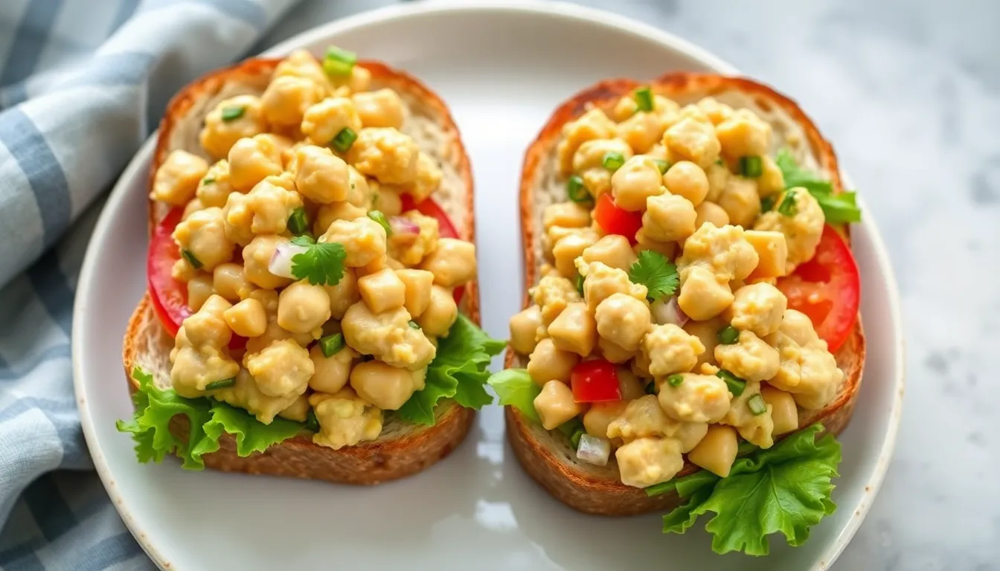

Chickpea Salad Sandwiches
Prep time: 10 minutes - Cook time: 0 minutes - Total time: 10 minutes
Estimated total cost: $7.40 - Estimated cost per serving: $1.85 - Serves: 4

Ingredients
- 1 can chickpeas, drained and rinsed — $1.00
- 2 tablespoons vegan mayo or mashed avocado — $0.60
- 1 teaspoon mustard — $0.05
- 1 tablespoon chopped onion or celery — $0.20
- 1 tablespoon lemon juice — $0.15
- 1/2 teaspoon garlic powder — $0.05
- 1/2 teaspoon salt — $0.05
- 1/4 teaspoon black pepper — $0.05
- 8 slices bread — $1.60
- Optional: lettuce or tomato slices — $0.80
Estimated ingredient total: $3.75 to $4.55
Displayed planning estimate: $7.40
Detailed Instructions
- Drain and rinse the chickpeas well.
- Add the chickpeas to a bowl and mash them with a fork or potato masher until mostly broken down but still a little chunky.
- Add the vegan mayo or mashed avocado, mustard, chopped onion or celery, lemon juice, garlic powder, salt, and black pepper.
- Stir until everything is evenly mixed.
- Taste and adjust seasoning if needed.
- Toast the bread if desired.
- Spoon the chickpea salad onto four slices of bread.
- Add optional lettuce or tomato.
- Top with the remaining slices of bread and serve.
Helpful Notes
- This filling also works well in wraps.
- Celery adds crunch if you have it.
- Chill the filling for 15 minutes if you want the flavors to blend more.
Price Note
Ingredient prices can vary by store, brand, and region, so these are planning estimates rather than exact totals.